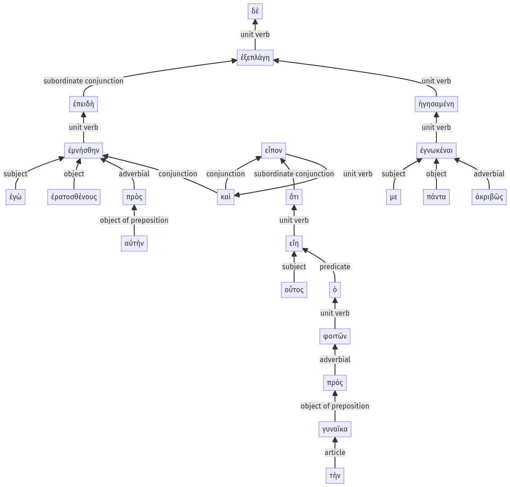

Lysias, Oration 1, 1.19.16-1.19.38a
1.19.13-1.19.15a | 1.20.51-1.20.57a
Sentence 50
1.19.16-1.19.38a
ἐπειδὴ δὲ ἐγὼ ἐμνήσθην ἐρατοσθένους πρὸς αὐτήν, καὶ εἶπον ὅτι οὗτος ὁ φοιτῶν εἴη πρὸς τὴν γυναῖκα, ἐξεπλάγη ἡγησαμένη με πάντα ἀκριβῶς ἐγνωκέναι.
2 ἐπειδὴ ἐγὼ ἐμνήσθην ἐρατοσθένους πρὸς αὐτήν
2 καὶ εἶπον
3 ὅτι οὗτος
4 ὁ φοιτῶν
3 εἴη
4 πρὸς τὴν γυναῖκα
1 ἐξεπλάγη
2 ἡγησαμένη
3 με πάντα ἀκριβῶς ἐγνωκέναι
ἐπειδὴ δὲ ἐγὼ ἐμνήσθην ἐρατοσθένους πρὸς αὐτήν, καὶ εἶπον ὅτι οὗτος ὁ φοιτῶν εἴη πρὸς τὴν γυναῖκα, ἐξεπλάγη ἡγησαμένη με πάντα ἀκριβῶς ἐγνωκέναι.
Highlighting:
- connecting words
- unit verb
- subject
- object
Color code:
- Independent clause (level 1, transitive verb)
- circumstantial participle (level 2, transitive verb)
- indirect statement with infinitive (level 3, transitive verb)
- subordinate clause (level 2, transitive verb)
- subordinate clause (level 2, transitive verb)
- indirect statement (level 3, linking verb)
- attributive participle (level 4, transitive verb)
